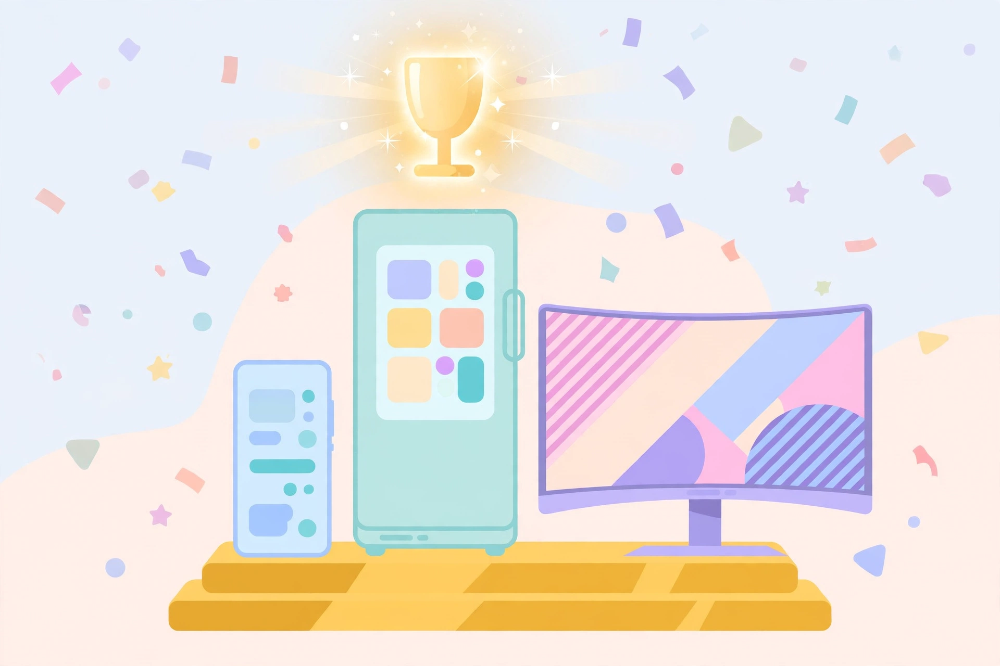

타임 '2026 최고의 발명품'에 삼성 3종 — S26 울트라·AI 패밀리허브·오디세이 G8
2026년 10월 20일

미국 시사주간지 타임이 발표한 '2026년 최고의 발명품'에 삼성전자 제품이 3종이나 이름을 올렸습니다. 스마트폰·생활가전·게이밍 분야에서 각각 한 개씩 수상한 건데요, 2021년 이후 매년 이어져 온 기록이라고 하네요.
- 소비자가전 — 갤럭시 S26 울트라: '사생활 보호에 초점을 맞춘 스마트폰'으로 소개, 옆에서 화면 엿보기 방지 '프라이버시 디스플레이' 주목
- 생활가전 — 비스포크 AI 패밀리허브 냉장고: 내부 카메라로 식재료 자동 인식·관리하는 'AI 비전' 기능 호평
- 엔터테인먼트·게이밍 — 오디세이 G8: 게이밍 모니터 최초 6K 해상도, 6K·165Hz와 3K·330Hz를 전환하는 '듀얼모드'
S26 울트라의 프라이버시 디스플레이가 특히 눈에 띕니다. 옆자리에서 화면을 흘겨볼 때 내용이 보이지 않게 막아주는 기능으로, 작동 시점도 직접 정하거나 팝업 알림 같은 특정 콘텐츠에만 적용할 수 있다고 하네요. 대중교통에서 스마트폰 쓸 때 가장 먼저 켜보고 싶은 기능 아닌가요.
출처: 부산일보 — 삼성전자 갤럭시 S26 울트라·패밀리허브 등 美 타임 '2026 최고의 발명품' 선정